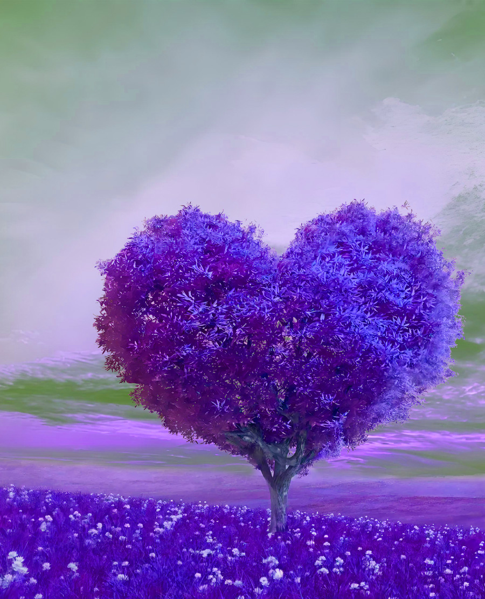

视频教程： https://youtu.be/euQ6sVHHxOQ
视频中使用的素材：点击下载>> | 备用下载>>
操作步骤：
通道抠图法
栅格化图层 → 进入通道面板 → 选择对比最强的颜色通道 → 复制通道
Ctrl+I反向 → Ctrl+L调出色阶强化黑白对比
选区精细化
白色画笔涂抹树木主体 → 擦除多余部分
Ctrl+左键载入选区 → 返回RGB通道
合成与调色
Ctrl+J复制选区 → 关闭背景层 → 拖入新背景素材
创建剪贴蒙版：
色相饱和度调整颜色匹配
曲线提亮树木主体
注：树木抠图关键在于通道选择与色阶调整，需选择枝叶与背景对比最强烈的单色通道（通常为蓝色）。对于复杂枝叶间隙，需用白色画笔手动补全缺失区域。最后通过调色使树木与新背景光影融合。
以下是PS抠树1成品效果
